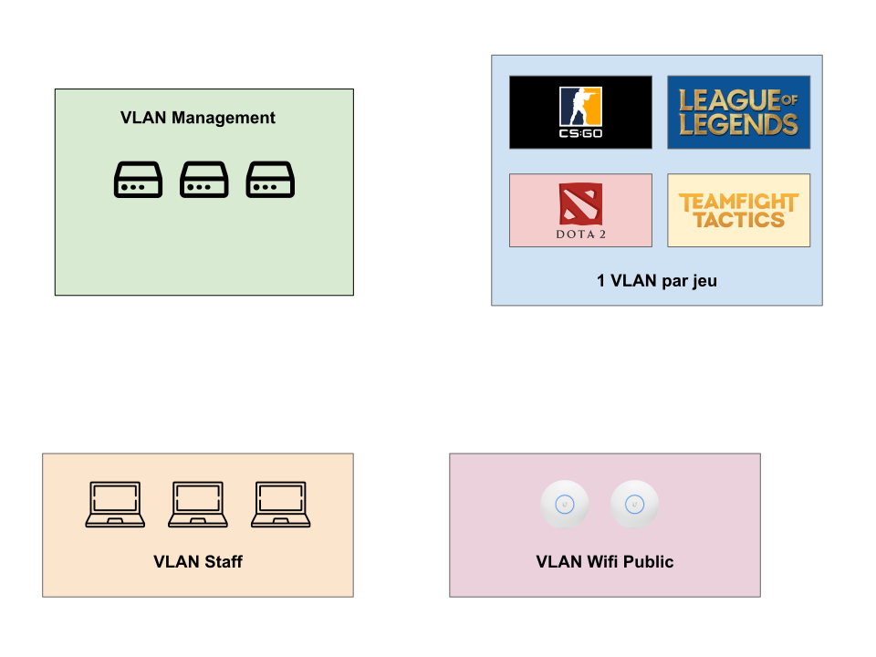
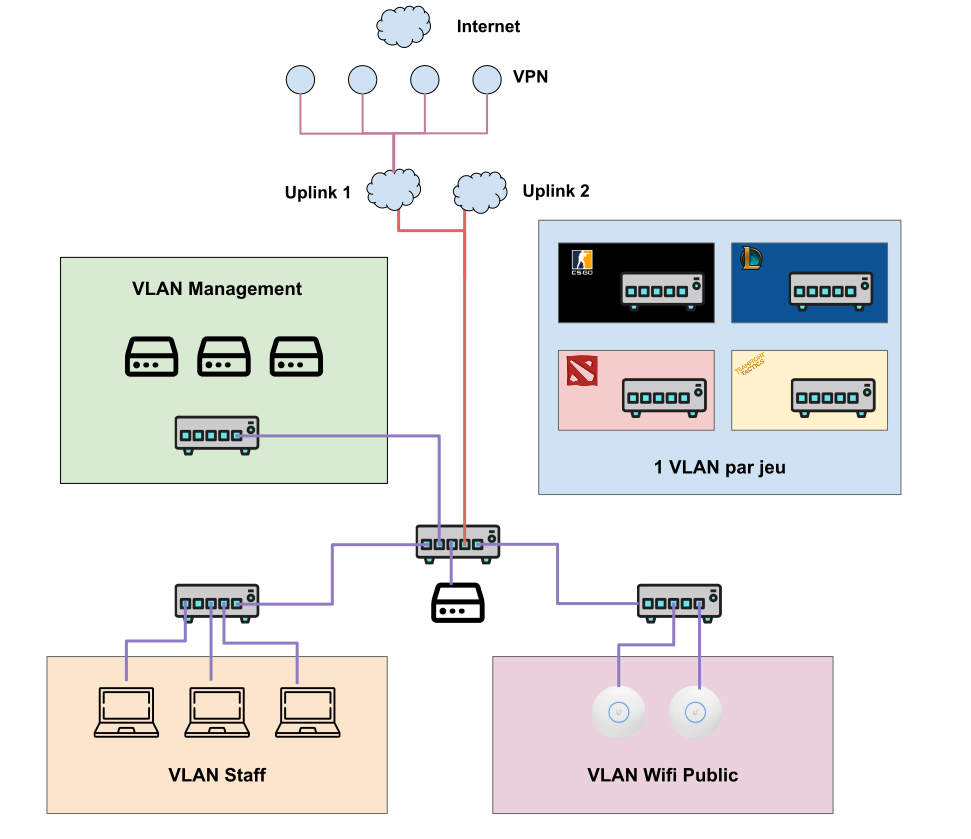
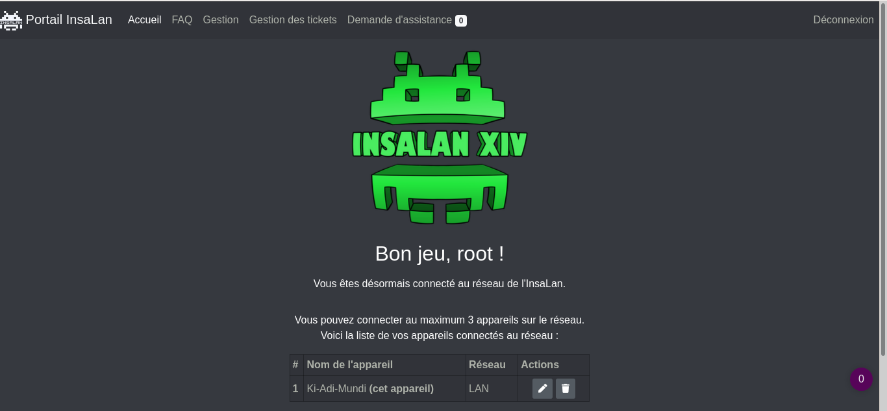

<!DOCTYPE html>
<html lang="en">
  <head>
    <meta charset="utf-8" />
    <meta name="viewport" content="width=device-width, initial-scale=1.0, maximum-scale=1.0, user-scalable=no" />

    <title>Organiser une LAN en 2020</title>
    <link rel="shortcut icon" href="./favicon.ico"/>
    <link rel="stylesheet" href="./dist/reveal.css" />
    <link rel="stylesheet" href="./dist/theme/moon.css" id="theme" />
    <link rel="stylesheet" href="./css/highlight/zenburn.css" />

  </head>
  <body>
    <div class="reveal">
      <div class="slides"><section  data-markdown><script type="text/template">
<!-- .slide: data-background="img/panorama-joueurs.png" data-background-opacity="0.5" -->
# Organiser une LAN en 2021
## Retour d'expérience

### @gallium & @mahal

### Barbhack 2021</script></section><section  data-markdown><script type="text/template"><!-- .slide: data-background="img/mini-vue-ensemble.jpg" data-background-opacity="0.5" -->
## L'InsaLan

<div style="color: #fff">

* **Asso étudiante** de l'INSA Rennes
* Organise une LAN : 48h de jeux, 500 joueurs, 1km de cable Ethernet, 40 switchs 24 ports. 
* 4 mini insalan au cours de l'année.

</div>

<aside class="notes"><p>citer les jeux (CS, LoL, Dota, jeu solo) mini = entrainement</p>
</aside></script></section><section  data-markdown><script type="text/template">
### Mais enfin, une lan, c'est 3 switches, des chips et des pc?
## alors c'est plus compliqué que ça <!-- .element: class="fragment" -->
</script></section><section  data-markdown><script type="text/template"><!-- .slide: data-background-color="#fff" -->
## Une infra robuste

</script></section><section  data-markdown><script type="text/template"><!-- .slide: data-background-color="#fff" -->
## Une infra robuste

</script></section><section  data-markdown><script type="text/template">## Gérer l'accès au réseau: *langate*



<aside class="notes"><p>Développement maison -&gt; ça nous appris des trucs i.e django qui chiffre pas les password, prévoir que l&#39;utilisateur est stupide (spam entrée)</p>
</aside></script></section><section  data-markdown><script type="text/template">## Un tooling efficace

<div style="color: #fff">

* Routage du trafic "manuel"
* Scripts de déploiements: *VPNator*, *IpRouteArcEnCiel*
* QoS: *fireqos*
* Serveurs de jeu : CS:GO

</div>

<aside class="notes"><p>(QoS: anecdote des mecs qui viennent seeder), (dll pétée, de manière générale les éditeurs s&#39;en branlent des jeux en LAN)</p>
</aside></script></section><section  data-markdown><script type="text/template"><!-- .slide: data-background-color="#000"  data-background="img/cafeine.jpg" data-background-opacity="0.5" -->
## Des techos et de la caféine (gestion opérationnelle)

<div style="color: #fff">

- Début des préparatifs au début de l'année scolaire
- Évènement sur 5 jours
- Démontage le dimanche soir

</div>
</script></section><section  data-markdown><script type="text/template">### Hotfix en prod (gérer l'imprévu)


</script></section><section  data-markdown><script type="text/template"><div style="color: #fff">

- Mettre en place un plan A, B, ~~C et D~~
- Redondance
- Assistance aux joueurs (les mecs qui viennent sans drivers)
- Réputation de la plage IP des VPN

</div>

<aside class="notes"><p>redondance du matos et des uplink (netgear qui prend 7s de ping, maj qui arrive le jeudi soir)</p>
</aside></script></section><section  data-markdown><script type="text/template"><!-- .slide: data-background-color="#000"  data-background="img/local.jpg" data-background-opacity="0.5" -->
### Conclusion
</script></section></div>
    </div>

    <script src="./dist/reveal.js"></script>

    <script src="./plugin/markdown/markdown.js"></script>
    <script src="./plugin/highlight/highlight.js"></script>
    <script src="./plugin/zoom/zoom.js"></script>
    <script src="./plugin/notes/notes.js"></script>
    <script src="./plugin/math/math.js"></script>
    <script>
      function extend() {
        var target = {};
        for (var i = 0; i < arguments.length; i++) {
          var source = arguments[i];
          for (var key in source) {
            if (source.hasOwnProperty(key)) {
              target[key] = source[key];
            }
          }
        }
        return target;
      }

      // default options to init reveal.js
      var defaultOptions = {
        controls: true,
        progress: true,
        history: true,
        center: true,
        transition: 'default', // none/fade/slide/convex/concave/zoom
        plugins: [
          RevealMarkdown,
          RevealHighlight,
          RevealZoom,
          RevealNotes,
          RevealMath
        ]
      };

      // options from URL query string
      var queryOptions = Reveal().getQueryHash() || {};

      var options = extend(defaultOptions, {"transition":"fade"}, queryOptions);
    </script>


    <script>
      Reveal.initialize(options);
    </script>
  </body>
</html>
